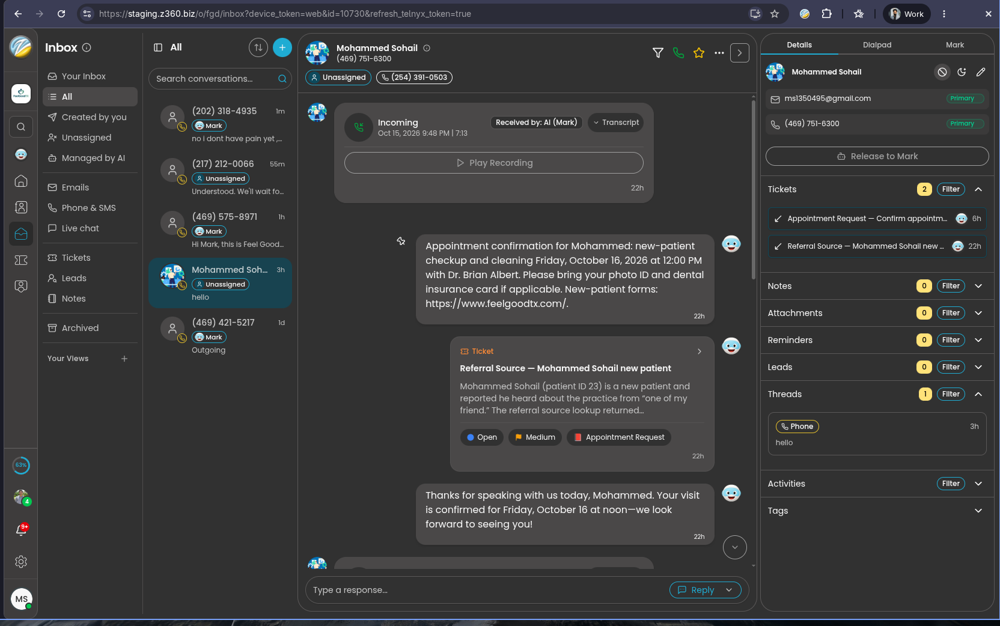
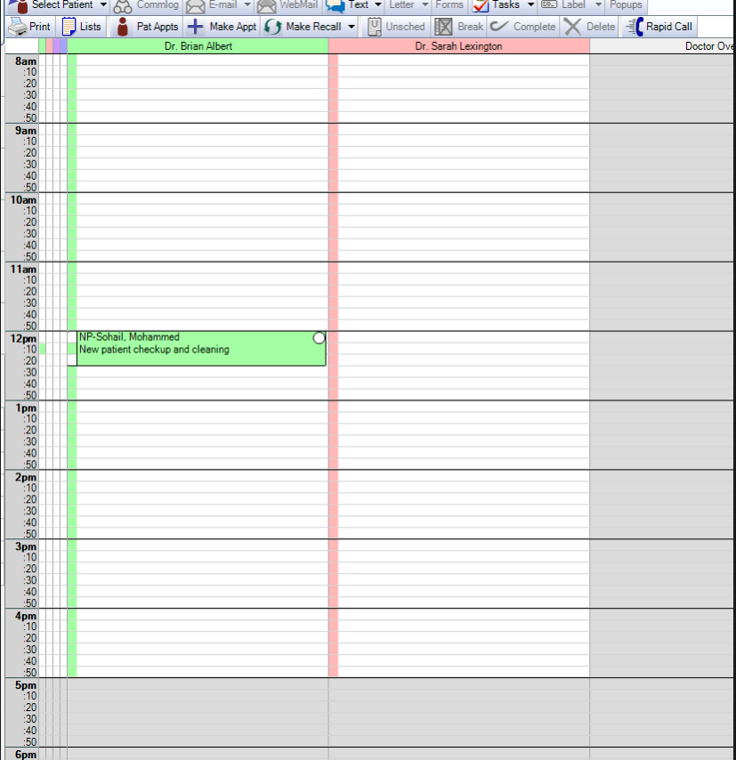
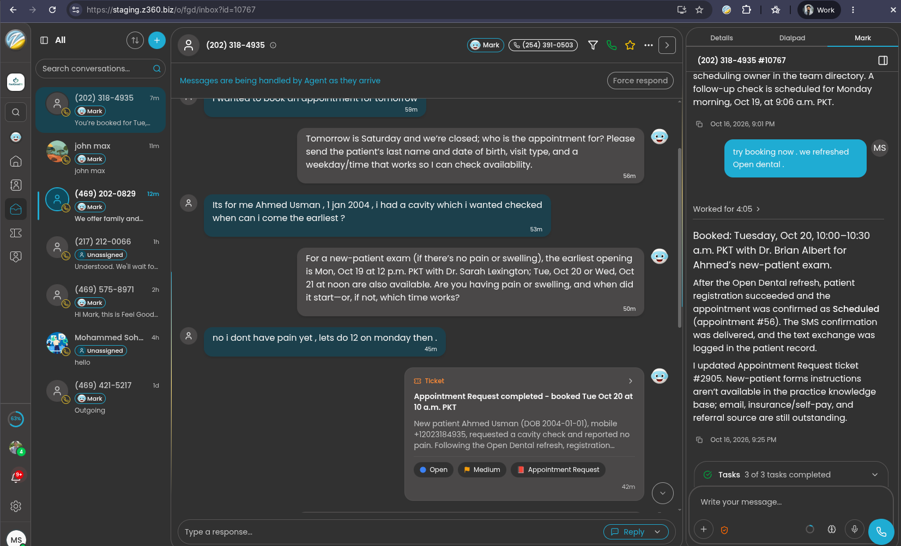

End-to-end demo: the MCP connector, how the data flows, the dental preset, live proof from our sandbox, and the path to Feel Good Dentistry.
Our MCP server on Z360 AWS: turns the Open Dental API into safe business tools
operation_id)[Z360]What the AI knows and does: installable per clinic, with clinic settings kept separate
preset.json)Calls, SMS, chat, tickets, pipelines
Patients, appointments, recall, treatment plans
Staff see it in Open Dental's communication log
Call · SMS · web chat
Phone & SMS carrier
Inbox, contacts, tickets, pipelines, automations
Org's skills; Open Dental tools imported as one action group
Voice AI ("Mark") on calls · Inbox agent on text · automation runs
/execute-action: runs a tool call; allows only our private MCP host
/opendental/mcp
Bearer token → practice connection → customer key
24 tools · safe writes · rate limit
api.opendental.com/api/v1
Auth: Z360 developer key + the practice's customer key
Always-on service on the office Windows PC
What staff see on screen
AI asks → tool → Open Dental → structured answer back
Confirm with patient → write → read back → log [Z360]
Windows VM with Open Dental 26.1 + eConnector, demo database
1.6–7 s per Open Dental call (measured in sandbox)
MCP over streamable HTTP, tool name + inputs
Bearer token matched against stored SHA-256 hashes. Wrong or unknown → 401
Token → connection: customer key, timezone, staff task user, rate limit
Only allowed fields and parameters; Open Dental silently ignores typos, so we don't send any
Paced per practice, 60 s timeout, unknown outcomes flagged
Always an explicit status (booked, conflict, practice_unreachable…) + what to do next
One broken integration answers 503; the others keep serving.
OD_DEVELOPER_KEY, OPENDENTAL_CONNECTIONSoperation_idREADlooks onlyMoney tools are built but held for the later payments/insurance packageThe AI reads the exact day, time and provider back first
operation_idSame ID seen before → return the saved result, don't write
Patient already has an overlapping visit → already_booked
Only allowed fields, practice timezone applied
"Booked" only when Open Dental shows it
[Z360]So staff can tell AI actions from their own
No conflict check or duplicate protection on Open Dental's side → we check first
Full patient list comes back instead → strict parameter allowlist
Shown as "User" → every Z360 entry starts with [Z360]
To the agent → every tool returns an explicit status field
No public URL. The gateway allows exactly one private host:port, logged on every use.
Only its SHA-256 is stored. Strict 401, constant-time compare.
The practice comes from the token, never from anything the AI sends.
An Open Dental token used on another integration's endpoint gets 401.
New token, update the hash, redeploy; or run two tokens side by side for zero downtime.
Sandbox license is test-only. Real patient data waits for the approved data path.
"Book my daughter a cleaning"
always
intake-and-booking
appointment-booking
Open Dental + Z360
"Look up" has no reads that depend on the caller's answers, so on calls the voice AI runs them while the caller is still talking.
911/ER direction before any question, then an Urgent ticket
One number = a household; last name + DOB finds the patient
Move, don't double-book; reuse the patient, lead, ticket
Opt-out sets text_ok = no in Open Dental too
Scheduled, internal, no patient
Due recalls, planned treatment, missed visits, ASAP list
First fail → skip
Names everyone on the number
Inbox agent texts, follows up, handles replies
Booked via intake-and-booking
Recall status / commlog in Open Dental
Recall fill finds Ali and Zara due, sharing one number → one lead names both
One text names both children. Each recall marked "reminder sent" in Open Dental
No reply after 4 days → one shorter follow-up
Mom replies "yes, Monday morning" → both booked back to back
Lead closed; log entries on both records. "STOP" at any point ends it and turns texting off in both systems
Nothing else is changed in Open Dental.
| Request | Goes to | Ticket type |
|---|---|---|
| Clinical questions, medication, treatment choices | Dentist | Clinical Question |
| Prices, estimates, what insurance pays | Treatment coordinator | Pricing Request · Insurance Check |
| Balances, disputes, refunds, payment plans | Billing | Billing Question |
| Complaints, attorneys, subpoenas | Office manager | Complaint |
| Records, forms, letters | Front desk | Records Request |

Z360 · Inbox
Open Dental · ScheduleOct 15, 9:48 PM · 7 min 13 s · recording + transcript
Mohammed Sohail → Open Dental patient #23 (test data)
Fri Oct 16, 12:00 PM · Dr. Brian Albert · "New patient checkup and cleaning"
Time, provider, what to bring, new-patient forms link
Appointment Request · Referral Source
Communication log entry tagged [Z360]

Z360 · Inbox · SMSThe agent sees tomorrow is Saturday and the practice is closed, then asks who it's for: last name, date of birth, visit type, preferred time
Agent asks about pain or swelling first (urgent-visit rule)
Mon Oct 19 12:00 with Dr. Sarah Lexington; Tue Oct 20, Wed Oct 21 at noon
Staff refreshed Open Dental and told the agent "try booking now" from the side panel
Appointment #56 · Tue Oct 20, 10:00–10:30 · Dr. Brian Albert · new-patient exam · status Scheduled
SMS confirmation delivered · ticket #2905 marked completed · text exchange logged on the Open Dental patient record
Name + DOB
Oct 16 → Oct 19, 12:00
No duplicate
| Sandbox | Live Open Dental 26.1 + eConnector: writes landed and were read back |
| Unit tests | Recorded responses: timeouts, conflicts, bad input |
| Times | Shown in PKT: staging is temporarily on Asia/Karachi |
| Today (demo) | Feel Good Dentistry | |
|---|---|---|
| Z360 environment | Staging, test org | Beta, FGD org 628 |
| Open Dental | Our Windows VM, demo database ("Relaxation Dental") | FGD's own server + eConnector |
| Customer key | Our sandbox key | FGD enables Z360 in Open Dental → their key |
| Timezone | Sandbox reports Asia/Karachi (install check fails, on purpose) | America/Chicago, must match the Z360 org |
| Duplicate-write memory | In memory, lost on redeploy | Redis (Valkey), survives restarts |
| Outreach | Pipelines paused | Switched on one at a time, after sender decisions |
integrations_mcp/README.md + decision log)Calls or texts any time
Answers 24/7
Our server
Relays requests to the office
Windows machine in the practice running Open Dental's eConnector. Off, asleep, restarting for updates, internet down or eConnector stopped → no connection.
Patients, schedule
The AI calls an Open Dental tool as usual
practice_unreachable"Nothing was read or changed"
Takes the request and says the team will follow up
Staff book it when the office opens
This walkthrough
Discovery answers; runbook and decision log handed over
Timeout-retry test; beta redeploy-retry test
Key, connection, install checks, preset paused
14 scenarios with the office
Booking first; outreach per sender decision